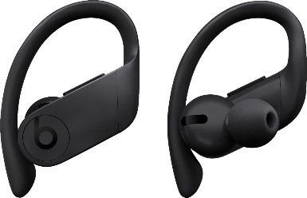
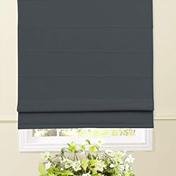
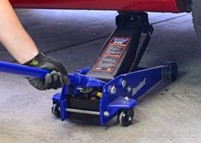

Justin's Christmas List
Wireless Headphones
Headphones that actually stay in the ears with good sound quality and bass
Blinds
Blinds to bloack the sun and lights for sleeping and working at my desk
CarJack
Good car jack to lift car for easy tire changes and other work
Bulk HardDrive
Large hard drive prefferably 4 to 8 TB of storage
Seagate is a good brand amozon sells for decent prices or can buy cheap used

About
Justin Leach is a broke student. He wants these items for christmas
Copyright© Justin Leach